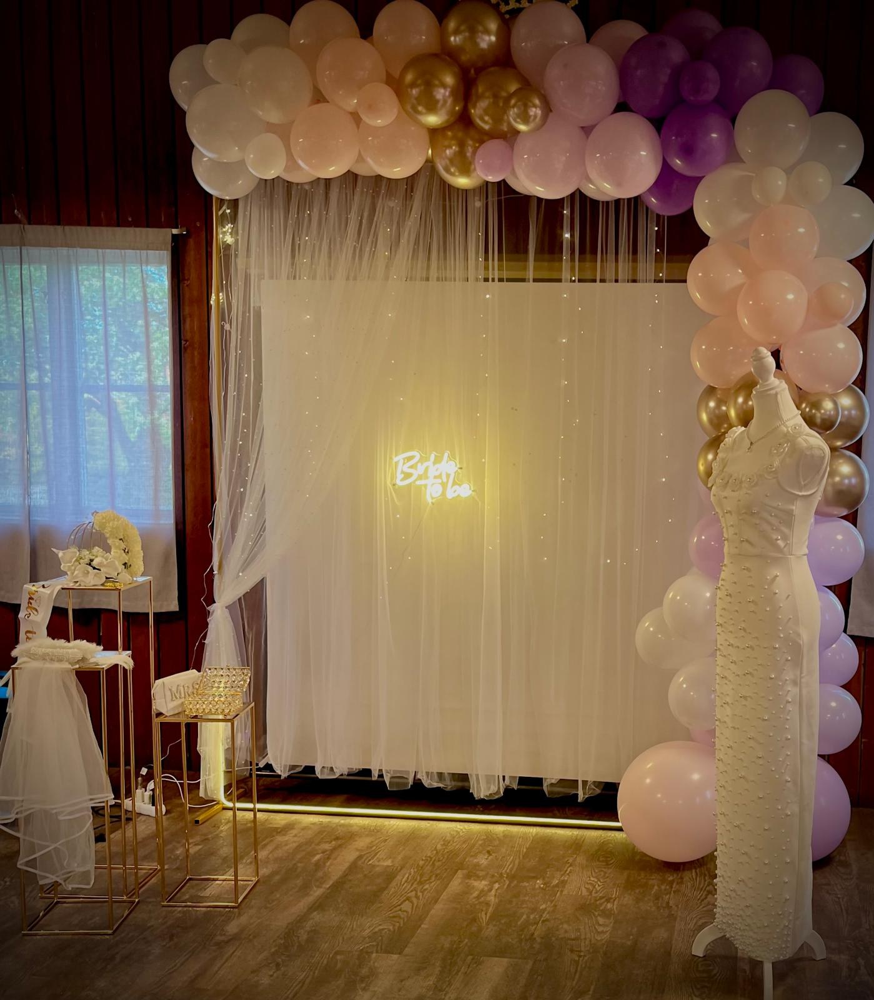
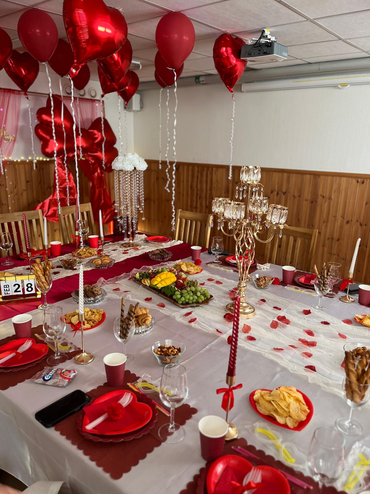
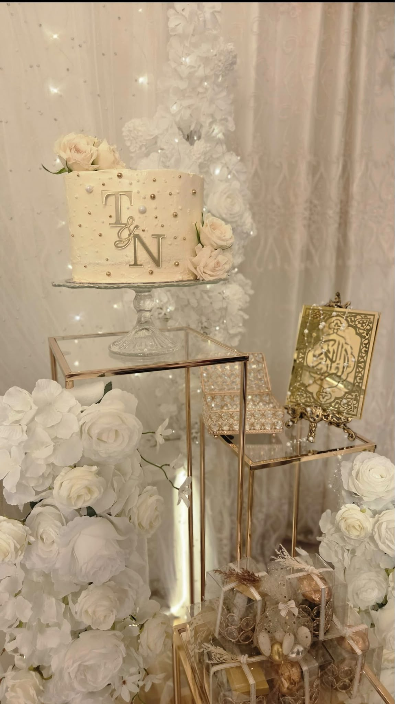

Om min hobby
Nu jag kommer att berätta om mina hobby, när jag var yngre hade jag många olika hobbyer och drömmar. Med tiden har mina intressen förändrats, men jag har fortfarande flera saker som jag tycker om att göra på min fritid för mina fester och för mina kompisar och dem som är nära mig. En av mina största hobbyer är att dekorera och fixa inför fester och olika tillställningar. Jag tycker om att vara kreativ och skapa en fin och mysig stämning. Jag gillar också att designa kläder och fotografera, eftersom jag tycker att det är roligt att skapa något själv och se resultatet av det jag har gjort.
På min fritid tycker jag även om att göra presenter till fester och speciella saker i festen, jag tycker att göra dessa presenter för fester eftersom de blir som ett snyggt minne från stunden vi delade. Ett annat intresse som har blivit viktigare för mig är programmering och teknik. Jag vill lära mig mer inom det området och utveckla mina kunskaper, eftersom jag tycker att det är spännande att kunna skapa och bygga saker med hjälp av teknik.


